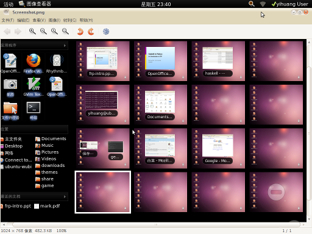
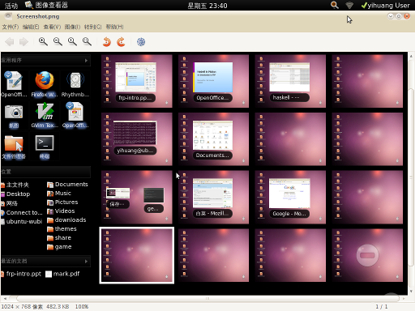
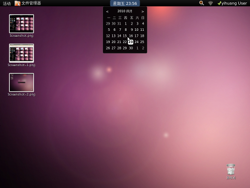
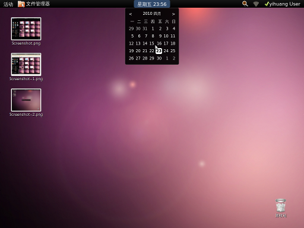
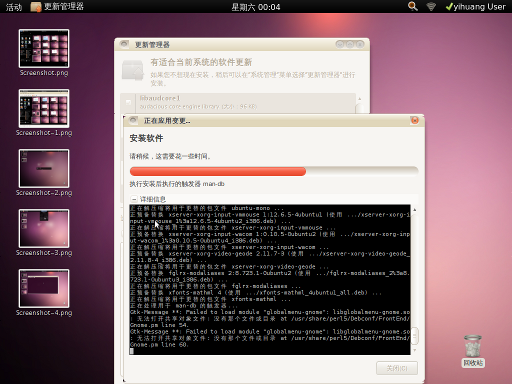
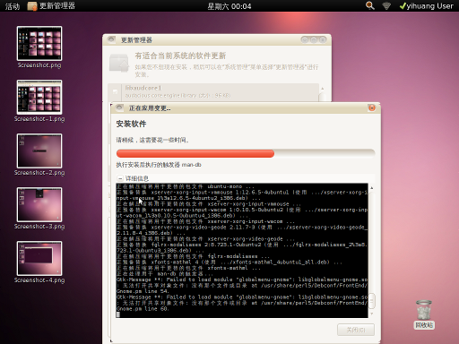

gnome shell试用截图
刚装上ubuntu10.04，用了一会 gnome shell，虽然完成度还不是很好，总体感觉还是挺不错的。现截图如下：
 

 

 

blog comments powered by Disqus
转载请注明出处，收藏或分享这篇文章到：


Website content copyright © by 黄毅. All rights reserved.